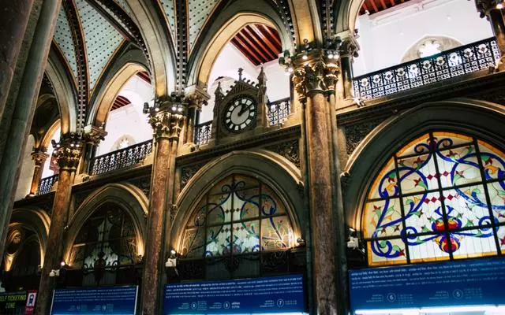
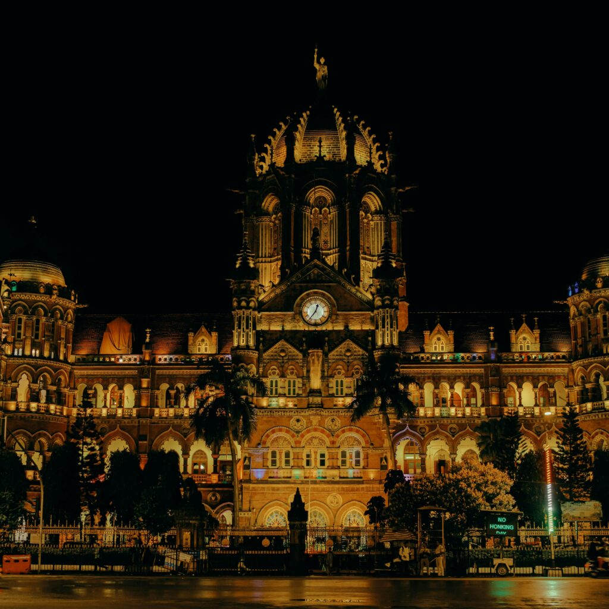
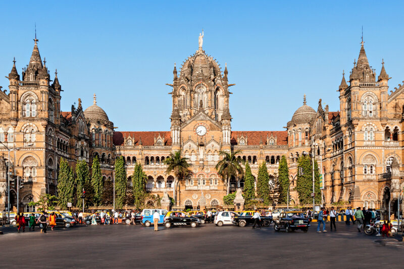
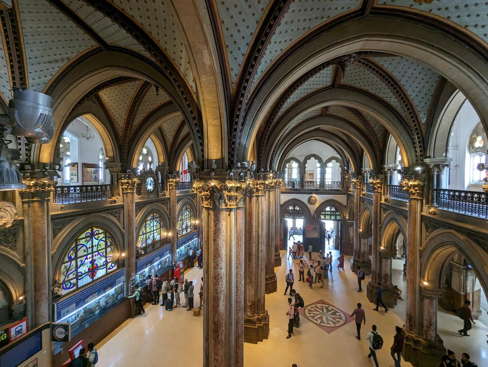

Chhatrapati Shivaji Maharaj Terminus




🏛️ History
Built in 1887 to commemorate Queen Victoria’s Golden Jubilee, CSMT is a UNESCO World Heritage Site. It was formerly known as Victoria Terminus.
🏰 Architecture
The station showcases Victorian Gothic Revival style blended with traditional Indian architecture. Its turrets, domes, pointed arches and stained glass windows are spectacular.
🚉 Transport Hub
CSMT serves as the headquarters of Central Railway and is one of the busiest train stations in India. It connects suburban local trains as well as long-distance routes.
📍 Location & Timings
Located in South Mumbai near Fort area, it is accessible 24x7. Its night lighting makes it even more mesmerizing.